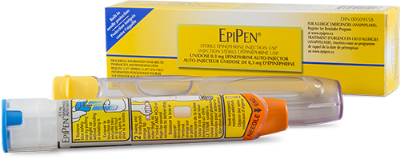
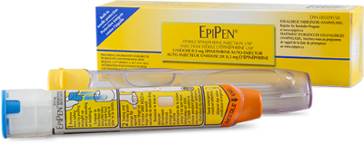

Mall Santa Saves Child From Peanut Allergy
A mall Santa saved a child from a dangerous peanut allergy this Saturday, by injecting his epipen while his mother wasn't around. Carl Reedsly has been working as a mall Santa for five years now. He says that he does it for the kids. He loves seeing the smiles on their face when they come to see Santa. Billy Jones has an allergy to tree nuts, and always carries his epinephrine pen. He was the last kid in line to see Santa on December 9th, and his pen was one of the only things that saved him.
Billy Jones came to the mall to tell Santa that he wanted a
new bicycle for Christmas. About halfway through the line, his mother needed to
leave to use the bathroom. The boy in front of him in line offered Billy a peanut
butter and jelly sandwich. Billy's peanut allergy started affecting him right away
first slurring his speech.


An epinephrine auto injector
Next, Billy started to break out in hives. Carl Reedsly, the
local mall Santa, noticed the kid start to turn red. He rushed over to Billy and
patted the kid down to see if he had an epipen. He found Billy's auto injector, and
injected Billy. After Billy was taken to the hospital, Carl came to his room as a
visitor, dressed in his Santa costume. Billy was able to tell Santa his Christmas
wishes and thank the man who saved him all at once. Billy and his mother have both
expressed their gratitude greatly, and even bought him his own Christmas gift, a
brand new Christmas sweater with the PlantersⒸ logo in a Santa costume.